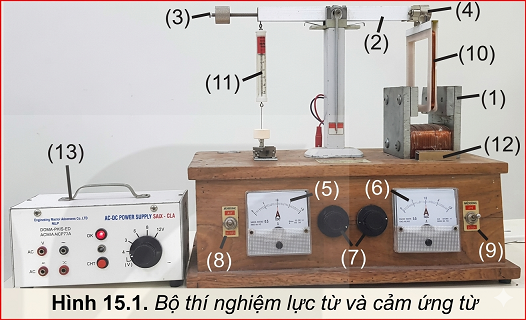
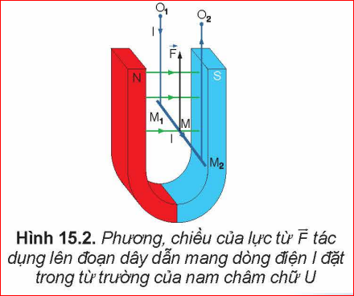
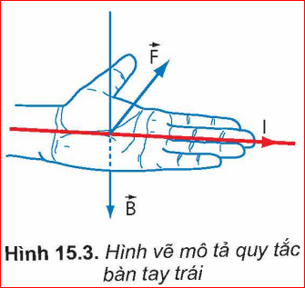
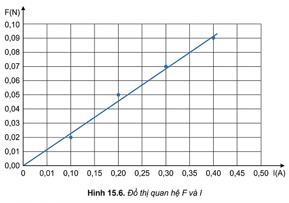

Tính chất cơ bản của từ trường là gây ra lực từ tác dụng lên một nam châm hay một dòng điện đặt trong từ trường đó. Vậy lực từ có đặc điểm như thế nào?
I. THÍ NGHIỆM VỀ LỰC TỪ TÁC DỤNG LÊN ĐOẠN DÂY DẪN MANG DÒNG ĐIỆN
Để khảo sát lực từ tác dụng lên đoạn dây dẫn mang dòng điện người ta sử dụng thiết bị như Hình 15.1.

Chuẩn bị:
- Hộp gỗ có gắn nam châm điện, đòn cân (2), gia trọng (3).
- Khung dây dẫn (4) (\(n=200\) vòng, \(l=10\) cm).
- Ampe kế (5), (6); Biến trở (7); Công tắc đảo chiều (8), (9).
- Lực kế (11); Đèn chỉ hướng (12); Nguồn DC 12V (13).
✋ Hoạt động:
1. Giải thích hiện tượng xảy ra với khung dây?
2. Xác định chiều cảm ứng từ, dòng điện và lực từ?
- Khi đóng điện, dòng điện qua khung dây nằm trong từ trường của nam châm điện sẽ chịu tác dụng của lực từ làm đòn cân bị lệch.
- Sử dụng quy tắc bàn tay trái để xác định mối quan hệ giữa các vectơ \(\vec{B}, \vec{I}, \vec{F}\).
Kết luận:
Lực từ \(\vec{F}\) có phương vuông góc với đoạn dây dẫn mang dòng điện và vuông góc với đường sức từ.

Quy tắc bàn tay trái:
Đặt bàn tay trái sao cho vectơ cảm ứng từ \(\vec{B}\) hướng vào lòng bàn tay, chiều từ cổ tay đến các ngón tay trùng với chiều dòng điện, thì ngón tay cái choãi ra \(90^\circ\) chỉ chiều của lực từ \(\vec{F}\).

❓ Sử dụng quy tắc bàn tay trái để kiểm chứng Hình 15.2 và xác định lực từ trong Hình 15.4.
- Hình 15.4b: Lực từ hướng sang trái.
- Hình 15.4c: Không có lực từ vì dòng điện song song với đường sức từ (\(\alpha = 0\)).
II. ĐỘ LỚN CẢM ỨNG TỪ
1. Biểu thức
Độ lớn của lực từ \(F\) tỉ lệ với cường độ dòng điện \(I\), chiều dài đoạn dây \(L\) và \(\sin \alpha\). Thương số sau đây là hằng số và được gọi là độ lớn cảm ứng từ \(B\):
\( B = \frac{F}{IL \sin \alpha} \)
Suy ra: \( F = BIL \sin \alpha \)
2. Đơn vị
Trong hệ SI, đơn vị cảm ứng từ là tesla (T).
\( 1 T = \frac{1 N}{1 A \cdot 1 m} \)
Bài tập ví dụ 1:
Đoạn dây \(L=1\)m, \(I=3\)A, \(B=5 \cdot 10^{-2}\)T, góc hợp bởi dây và \(\vec{B}\) là \(60^\circ\). Tính \(F\)?
\( F = 5 \cdot 10^{-2} \cdot 3 \cdot 1 \cdot \sin(60^\circ) \)
\( F = 0,15 \cdot \frac{\sqrt{3}}{2} \approx 0,13 \, (N). \)
III. THỰC HÀNH ĐO ĐỘ LỚN CẢM ỨNG TỪ
Mục đích: Xác định độ lớn cảm ứng từ của từ trường đều bằng thiết bị thí nghiệm Hình 15.1.
| Lần thí nghiệm | \( I(A) \) | \( F(N) \) | \( B = \frac{F}{IL} \) (với \(L = 0,02m\)) |
|---|---|---|---|
| 1 | 0,1 | 0,02 | 0,010 |
| 2 | 0,2 | 0,05 | 0,013 |
| 3 | 0,3 | 0,07 | 0,012 |
| 4 | 0,4 | 0,09 | 0,011 |

📝 LƯU Ý / EM ĐÃ HỌC
- Lực từ \(\vec{F}\) đặt tại trung điểm đoạn dây, vuông góc với \(\vec{I}\) và \(\vec{B}\).
- Độ lớn: \( F = BIL \sin \alpha \).
- Đơn vị cảm ứng từ: Tesla (T).
🚀 EM CÓ THỂ
Giải thích được nguyên tắc hoạt động của tàu đệm từ dựa trên tương tác giữa các nam châm điện đặt ở đường ray và nam châm siêu dẫn đặt trên tàu.
💡 EM CÓ BIẾT: TÀU ĐỆM TỪ
Tàu đệm từ là phương tiện không tiếp xúc trực tiếp với ray, vận hành êm và tốc độ cao. Sử dụng cơ chế đẩy (tương tác nam châm siêu dẫn) và cơ chế nâng (lực từ thắng trọng lực khi đạt tốc độ tới hạn).
Bài tập trắc nghiệm củng cố
Câu 1: Đơn vị của cảm ứng từ trong hệ SI là gì?
Câu 2: Công thức tính độ lớn lực từ tác dụng lên đoạn dây dẫn là:
Câu 3: Quy tắc bàn tay trái dùng để xác định:
Câu 4: Khi dây dẫn đặt song song với đường sức từ thì lực từ có giá trị:
Câu 5: Tesla (T) tương đương với đơn vị nào?
Bài tập vận dụng tính toán
Bài 1: Một đoạn dây dẫn thẳng dài \(0,4\)m mang dòng điện \(5\)A đặt trong từ trường đều có cảm ứng từ \(0,08\)T. Tính lực từ khi dây vuông góc với cảm ứng từ.
Vì dây vuông góc nên \(\alpha = 90^\circ \Rightarrow \sin \alpha = 1\).
Áp dụng: \( F = BIL = 0,08 \cdot 5 \cdot 0,4 = 0,16 \, (N) \).
Bài 2: Một đoạn dây dẫn dài \(20\)cm đặt trong từ trường đều sao cho dây hợp với \(\vec{B}\) một góc \(30^\circ\). Lực từ tác dụng là \(0,1\)N. Biết \(I = 10\)A, tính \(B\).
Đổi \(L = 0,2 \, m\). Ta có \( F = BIL \sin 30^\circ \).
\(\Rightarrow B = \frac{F}{IL \sin 30^\circ} = \frac{0,1}{10 \cdot 0,2 \cdot 0,5} = \frac{0,1}{1} = 0,1 \, (T) \).
Bài 3: Một khung dây hình vuông cạnh \(10\)cm gồm \(50\) vòng dây đặt trong từ trường đều \(B = 0,02\)T. Dòng điện qua khung là \(2\)A. Tính lực từ cực đại tác dụng lên một cạnh của khung.
Lực tác dụng lên một cạnh của khung dây có \(N\) vòng dây là: \( F = N \cdot BIL \sin \alpha \).
Lực cực đại khi \(\alpha = 90^\circ \Rightarrow F_{max} = N \cdot BIL \).
\( F_{max} = 50 \cdot 0,02 \cdot 2 \cdot 0,1 = 0,2 \, (N) \).